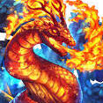
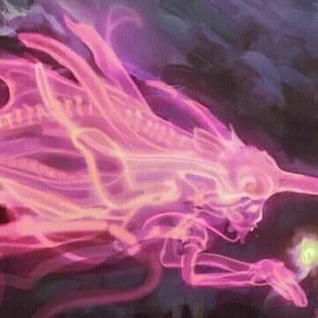
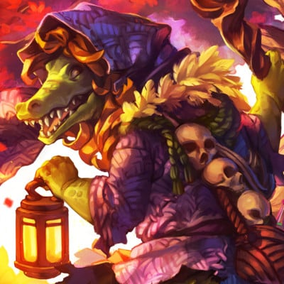
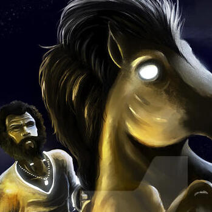
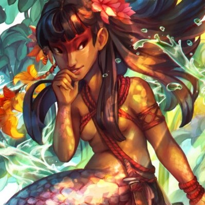

SOBRE MIM

"Mano, eu sou simplesmente extravagante! Eu vejo o mundo com um olhar supercolorido e tento sempre trazer mais vida e cor pro presente, mesmo quando tudo parece meio sem graça, sacou? E falando nisso, cê quer um brilhinho aí? A moda é minha paixão desde pivete e foi através dela que eu aprendi a me expressar, ajudar a galera e mostrar quem eu sou de verdade. Já dei altas dicas fashion pros brothers, porque a vida é muito mais maneira com uns Color Block Canelados no rolê!"
INVESTIGAÇÃO
~ Enquanto alguns se preocupam em seguir as tendências da moda, eu prefiro desbravar o mundo paranormal, investigando mistérios que desafiam as leis da natureza. É um estilo único e incomparável, você não acha?

Título
~ Enquanto alguns se preocupam em seguir as tendências da moda, eu prefiro desbravar o mundo paranormal, investigando mistérios que desafiam as leis da natureza. É um estilo único e incomparável, você não acha?
Título
~ Enquanto alguns se preocupam em seguir as tendências da moda, eu prefirmistérios que desafiam as leis da natureza. É um estilo único e incomparável, você não acha?
Título
~ Enquanto algunistérios que desafiam as leis da natureza. É um estilo único e incomparável, você não acha?
MONSTROS

Saci-Pererê
Meu caro, você já ouviu falar do Saci-pererê? É uma lenda brasileira com origem tupi-guarani, que é representada por um menino negro superestiloso que possui apenas uma perna, mas não se deixe enganar pela aparência, ele é poderoso! Sempre acompanhado de seu inseparável cachimbo, o Saci usa uma carapuça vermelha que lhe dá habilidades mágicas únicas e incomparáveis.
Esse ser travesso e brincalhão surge como um redemoinho, deixando rastros de sua presença por onde passa, e adora pregar peças nas pessoas, é uma figura icônica e cheia de personalidade. Além disso, você sabia que existem três tipos de Saci? Sim, além do famoso Saci-pererê, temos também o Pererê, o Trique e o Saçurá, cada um com sua particularidade que fazem deles lendas fascinantes e inspiradoras.
Curupira
Meu caro, você já ouviu falar do Curupira? Ele é uma figura icônica do folclore brasileiro, representado por um menino superestiloso com cabelos vermelhos e pés virados para trás. Interessante, não é mesmo? O nome Curupira tem origem tupi-guarani e significa "corpo de menino".
Essa figura travessa e cheia de personalidade é conhecida por ser um protetor da fauna e da flora, e para despistar os exploradores e destruidores da natureza, ele assobia e deixa pegadas com seus pés virados para trás. É uma figura encantadora e cheia de truques que inspira todos a preservar e respeitar a natureza.
Mula sem Cabeça
Meu amigo, você já ouviu falar da mula sem cabeça? É um monstro do folclore brasileiro que assusta muita gente! Dizem que ela se manifesta quando uma mulher namora um padre e é amaldiçoada, transformando-se em mula.
Essa personagem folclórica é representada por uma mula sem cabeça, que solta fogo pelo pescoço e causa medo em pessoas e animais. É algo realmente assustador! No entanto, é importante lembrar que as histórias variam de região para região no Brasil, o que torna essa lenda ainda mais fascinante e misteriosa.
Lobisomem
Meu caro, você já ouviu falar do Lobisomem? Essa lenda tem origem europeia e é muito interessante! Ela retrata um monstro violento, com formas humanas e de lobo, que se alimenta de sangue.
Dizem que quando uma mulher tem sete filhas e o oitavo filho é homem, este último pode se tornar um Lobisomem. Além disso, em algumas versões da lenda, essa criatura aterrorizante pode se manifestar em crianças que não foram batizadas.
A transformação do homem em Lobisomem acontece nas encruzilhadas, em noites de lua cheia, por volta da meia-noite. E ao amanhecer, ele volta a ser humano. É uma lenda fascinante, que inspira muitas histórias de terror até hoje.
Boitatá
Meu caro, você já ouviu falar do Boitatá? Essa lenda folclórica é conhecida por vários nomes, como Baitatá, Biatatá, Bitatá e Batatão, e tem origem na língua indígena Tupi-Guarani, que significa "cobra de fogo".
O Boitatá é representado por uma grande serpente de fogo que protege os animais e as matas. É uma criatura muito poderosa e respeitada, que inspira muitos contos e histórias em todo o Brasil.
Essa lenda foi originalmente registrada num texto do século XVI pelo Jesuíta José de Anchieta, mas ao longo do tempo sofreu muitas modificações, gerando diversas versões conforme a região do país. É uma história fascinante, cheia de mistério e magia.
Boto Cor-de-Rosa
Você já ouviu falar do lendário Boto cor-de-rosa? Essa lenda fascinante tem origem na região amazônica, sendo também conhecida como Uauiará.
Conta-se que em noites de Festas Juninas, o boto, animal dos rios da Amazônia, se transforma em um homem extremamente atraente com o objetivo de seduzir as mulheres. Ele as convida para um passeio no rio e as leva ao fundo das águas para acasalar.
A cultura amazônica acredita que o Boto é o pai de todos os filhos de origem desconhecida, o que torna essa lenda ainda mais intrigante. Com suas histórias e lendas, a Amazônia nos presenteia com uma rica tradição cultural que inspira e encanta a todos.
Cuca
A Cuca é uma figura lendária tão assustadora quanto elegante. De origem portuguesa, é frequentemente associada ao temido "bicho papão". Representada como uma velha com feições de jacaré, ela é conhecida por nunca dormir.
Dizem que a Cuca sequestra crianças desobedientes que não querem dormir e as leva para longe. É por isso que as mães costumam cantar a cantiga de ninar: "Nana neném que a Cuca vem pegar". Com suas garras afiadas e sua aparência sinistra, a Cuca é certamente uma personagem folclórica que faz tremer até os mais corajosos.
Negrinho do Pastoreiro
Meu caro, a lenda do Negrinho do Pastoreio, pertencente ao folclore do sul do país, é uma história intrigante e cheia de simbolismos. Esse personagem é representado por um jovem escravo que usava um elegante uniforme de pastoreio.
De acordo com a lenda, o Negrinho do Pastoreio foi agredido brutalmente por seu patrão após perder um cavalo baio. No entanto, milagrosamente, ele apareceu ao lado da Virgem Maria, montado em um belo cavalo branco e sem nenhuma marca de agressão.
Eu sei que muitas pessoas costumam acender velas e pedir a ajuda do Negrinho do Pastoreio quando perdem algum objeto valioso ou importante. E quem pode culpá-las? Afinal, além de ser um símbolo de esperança e fé, essa lenda possui uma estética fashion que certamente chama a atenção.
Iara
A lenda da Iara, ou Uiara, é uma das mais conhecidas do folclore brasileiro e sua figura lendária é fascinante para o homem fashion moderno. Iara é representada como uma sereia de beleza hipnotizante que habita as águas dos rios e mares do Brasil. Seu cabelo longo e sedoso, pele impecável e traços delicados a tornam a musa inspiradora de muitos designers e artistas.
No entanto, por trás de sua beleza estonteante, há uma história de vingança e traição. A Iara original era uma índia corajosa e inteligente que foi traída e assassinada pelos próprios irmãos. Ao ser lançada no encontro dos rios, ela se transformou em uma sereia com o objetivo de atrair e matar os homens que navegam em suas águas.